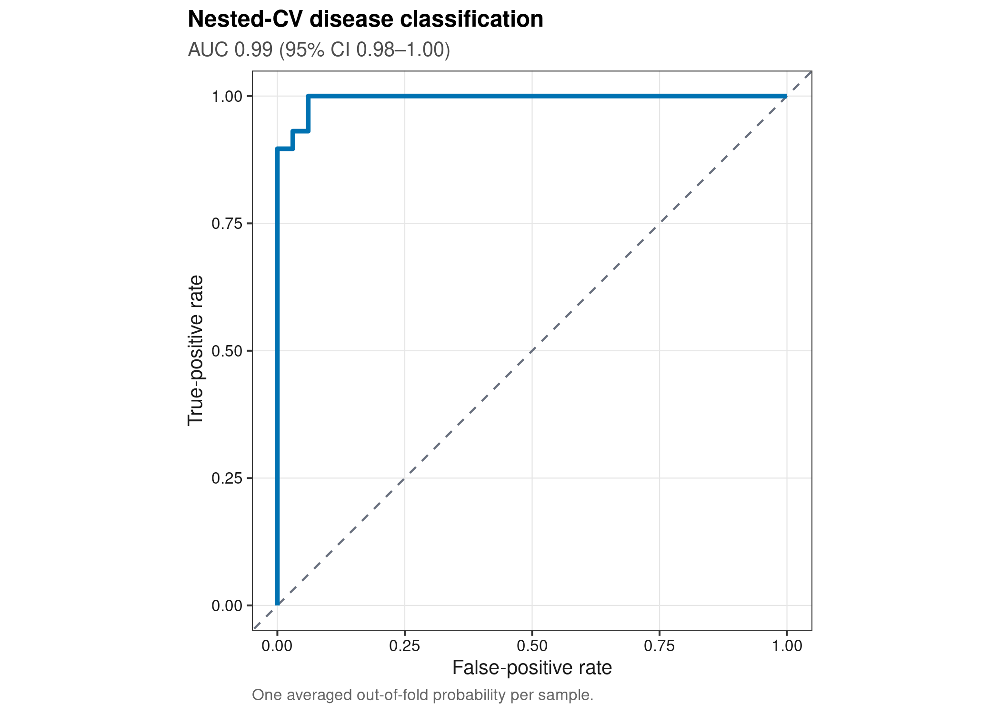
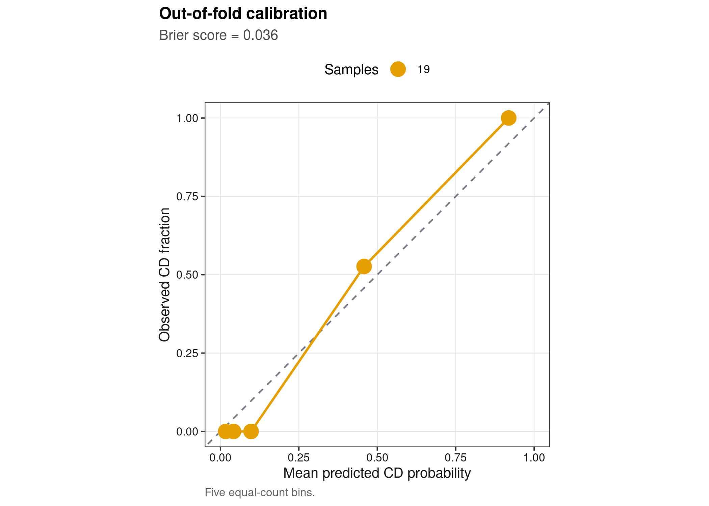
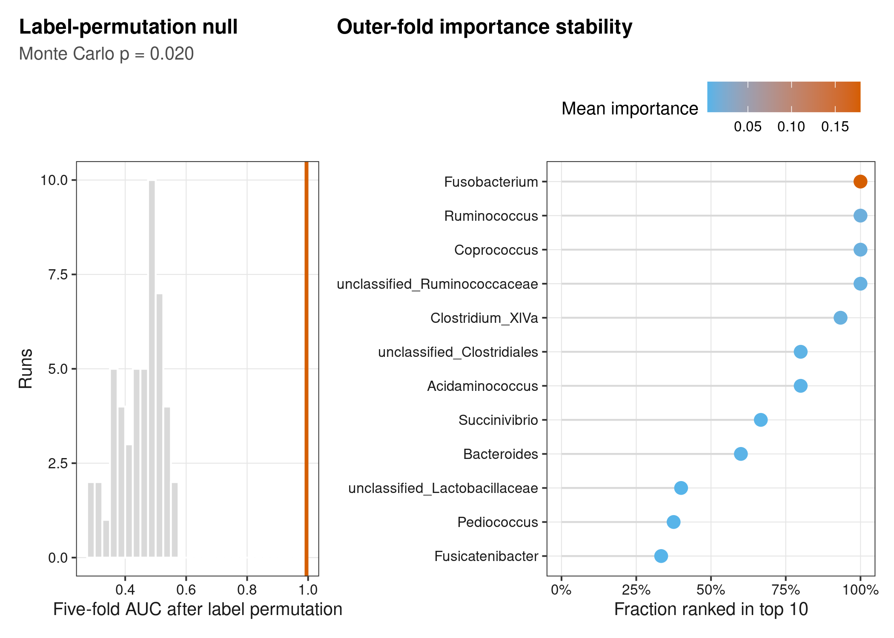
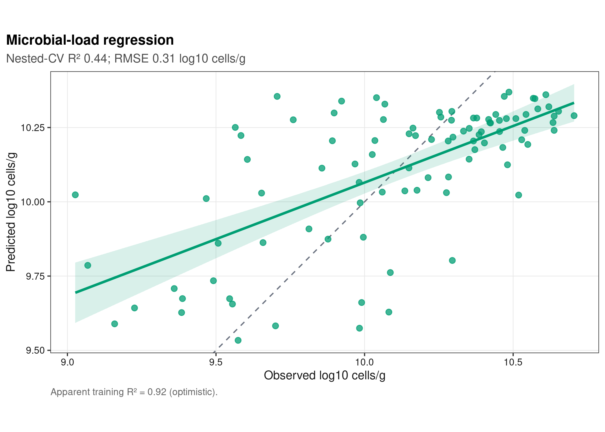

options(timeout = 600)
data_url <- "https://raw.githubusercontent.com/petemeng/microbiome-best-practices/3cb6a817e0c73ab7ecbec1cedc1ad80cbb9ecfaa/"
input_files <- c(
"data/small/absolute-quantification/cell-load.tsv",
"data/small/absolute-quantification/metadata.tsv",
"data/small/absolute-quantification/otutab.tsv",
"data/small/absolute-quantification/source-summary.json",
"data/small/absolute-quantification/taxonomy.tsv"
)
for (path in input_files) {
dir.create(dirname(path), recursive = TRUE, showWarnings = FALSE)
if (!file.exists(path)) download.file(paste0(data_url, path), path, mode = "wb", quiet = TRUE)
}随机森林分类与回归：ROC、重要性与防过拟合
随机森林的首要任务是外部可泛化，而非训练集 AUC
Vandeputte et al. (2017)展示了 microbial load 如何改变疾病关联；Topçuoğlu et al. (2020)系统指出 microbiome machine learning 对 preprocessing、validation 和 leakage 极其敏感。以下分析在公开 Vandeputte cohort 上完全使用 out-of-fold 预测，并同时检查 ROC、calibration、permutation/importance 和 microbial-load regression。
重要先给结论
随机森林能拟合高维非线性，但“树多”不会自动防止研究流程过拟合。feature filtering、CLR basis、hyperparameter tuning、threshold selection 和 importance calculation 都必须在 training fold 内完成；test fold 只能在模型锁定后使用一次。本文所有主性能都来自 sample-level out-of-fold predictions。
本页只保留 Cohort == "Disease" 的 95 个样本，避免把额外 study controls 与病例队列混合。分类标签是观察性 CD/healthy，不等价于病因；回归结局是独立 flow-cytometry cells/g，而不是 sequencing library size。
内部验证通过之后，还缺哪一种泛化证据？
本例重复交叉验证让每个样本获得多次 out-of-fold 预测，但这些预测共享大量训练样本，不能当作新增独立测试样本。汇总时每个真实样本只贡献一个最终概率；若有同一受试者的重复观测，整个受试者必须留在同一折内。来自同一队列的内部验证仍不能代替新医院、新平台或新采样时期的验证。
95 个样本中的病例比例也不是未来筛查人群的患病率。即使排序 AUC 保持，阳性预测值和概率校准仍可能变化。临床用途需要独立外部队列、明确使用场景及阈值代价；解释模型时，重要性高的菌只表示预测依赖，不能由此确定病因或治疗靶点。若模型仅比简单临床基线略好，还应检验它增加的信息是否值得测序成本。
下载并读取本次分析的数据
需要 R，以及 ggplot2、pROC、patchwork、ragg、ranger、readr、scales、svglite。本次使用微生物组三张表以及实测细胞负荷表，分别用于分类与回归任务。
在一个新建的文件夹中运行以下代码，下载文件后按文中的顺序继续分析：
library(ggplot2)
library(patchwork)
library(ranger)
set.seed(20260743)
font_pub <- "sans"
pal_pub <- c(
blue = "#0072B2", orange = "#E69F00", green = "#009E73",
vermillion = "#D55E00", purple = "#CC79A7", sky = "#56B4E9",
yellow = "#F0E442", grey = "#6B7280"
)
scale_color_pub <- function(..., values = unname(pal_pub)) ggplot2::scale_color_manual(..., values = values)
scale_fill_pub <- function(..., values = unname(pal_pub)) ggplot2::scale_fill_manual(..., values = values)
theme_pub <- function(base_size = 10, base_family = font_pub) {
ggplot2::theme_bw(base_size = base_size, base_family = base_family) +
ggplot2::theme(
panel.grid.minor = ggplot2::element_blank(),
panel.grid.major = ggplot2::element_line(colour = "#E6E6E6", linewidth = 0.25),
axis.text = ggplot2::element_text(colour = "#1A1A1A"),
axis.title = ggplot2::element_text(colour = "#1A1A1A"),
plot.title.position = "plot",
plot.title = ggplot2::element_text(face = "bold", size = ggplot2::rel(1.15)),
plot.subtitle = ggplot2::element_text(colour = "#4D4D4D"),
plot.caption = ggplot2::element_text(colour = "#666666", hjust = 0),
strip.background = ggplot2::element_rect(fill = "#F2F2F2", colour = "#B3B3B3"),
strip.text = ggplot2::element_text(face = "bold"),
legend.key = ggplot2::element_blank(), legend.position = "top"
)
}
save_pub <- function(plot, file_base, width = 89, height = 70, units = "mm", dpi = 600) {
dir.create(dirname(file_base), recursive = TRUE, showWarnings = FALSE)
ggplot2::ggsave(paste0(file_base, ".pdf"), plot, width = width, height = height,
units = units, device = grDevices::cairo_pdf, family = font_pub, bg = "white")
ggplot2::ggsave(paste0(file_base, ".svg"), plot, width = width, height = height,
units = units, device = svglite::svglite, bg = "white")
ggplot2::ggsave(paste0(file_base, ".png"), plot, width = width, height = height,
units = units, dpi = dpi, device = ragg::agg_png, bg = "white")
ggplot2::ggsave(paste0(file_base, ".tiff"), plot, width = width, height = height,
units = units, dpi = dpi, device = ragg::agg_tiff,
compression = "lzw", bg = "white")
invisible(plot)
}读取三件套与独立 cell-load outcome
read_keyed_tsv <- function(path) {
x <- readr::read_tsv(path, show_col_types = FALSE, progress = FALSE,
name_repair = "minimal", na = character())
ids <- as.character(x[[1L]])
stopifnot(!anyDuplicated(ids))
out <- as.data.frame(x[-1L], check.names = FALSE)
rownames(out) <- ids
out
}
data_dir <- "data/small/absolute-quantification"
otutab_raw <- read_keyed_tsv(file.path(data_dir, "otutab.tsv"))
taxonomy <- read_keyed_tsv(file.path(data_dir, "taxonomy.tsv"))
metadata_all <- read_keyed_tsv(file.path(data_dir, "metadata.tsv"))
cell_load_all <- read_keyed_tsv(file.path(data_dir, "cell-load.tsv"))
otutab_all <- as.matrix(data.frame(lapply(otutab_raw, as.integer), check.names = FALSE))
rownames(otutab_all) <- rownames(otutab_raw)
sample_ids <- rownames(metadata_all)[metadata_all$Cohort == "Disease"]
counts <- otutab_all[, sample_ids, drop = FALSE]
metadata <- metadata_all[sample_ids, , drop = FALSE]
outcome <- factor(metadata$HealthStatus, levels = c("Healthy", "CD"))
log10_cell_load <- log10(as.numeric(cell_load_all[sample_ids, "AbsoluteCellLoad"]))
names(log10_cell_load) <- sample_ids
stopifnot(
nrow(counts) == 234L, ncol(counts) == 95L,
sum(outcome == "CD") == 29L, sum(outcome == "Healthy") == 66L,
identical(colnames(counts), rownames(metadata)),
all(is.finite(log10_cell_load))
)
head(counts[, 1:5])
head(taxonomy)
head(metadata)
summary(log10_cell_load) sa1 sa2 sa3 sa4 sa5
Abiotrophia 0 1 0 0 0
Acetanaerobacterium 0 0 0 0 0
Acetatifactor 0 0 0 0 0
Acetitomaculum 0 0 0 0 0
Acetivibrio 0 0 0 0 0
Acidaminococcus 761 279 5839 8 2784
Kingdom Phylum Class Order Family Genus
Abiotrophia NA NA NA NA NA Abiotrophia
Acetanaerobacterium NA NA NA NA NA Acetanaerobacterium
Acetatifactor NA NA NA NA NA Acetatifactor
Acetitomaculum NA NA NA NA NA Acetitomaculum
Acetivibrio NA NA NA NA NA Acetivibrio
Acidaminococcus NA NA NA NA NA Acidaminococcus
Species
Abiotrophia NA
Acetanaerobacterium NA
Acetatifactor NA
Acetitomaculum NA
Acetivibrio NA
Acidaminococcus NA
SubjectID Cohort HealthStatus
sa1 DC01 Disease CD
sa2 DC02 Disease CD
sa3 DC03 Disease CD
sa4 DC04 Disease CD
sa5 DC05 Disease CD
sa6 DC06 Disease CD
Min. 1st Qu. Median Mean 3rd Qu. Max.
9.027 9.884 10.214 10.112 10.433 10.705 下载完整 R 脚本。脚本包含数据下载、计算和图形导出。
首次使用时安装 R 包
install.packages(c(
"ggplot2", "patchwork", "pROC", "ragg", "ranger", "readr",
"scales", "svglite", "systemfonts"
))评估单位必须是未来样本
nested CV 把调参和估计泛化误差分开
每个 outer split 保留 test fold；仅在 outer training set 内用 inner CV 选择 mtry 与 min.node.size。随后用完整 outer training set 重做 prevalence filter、CLR 和模型拟合，最后预测 outer test。重复 3 次 5-fold CV 后，每个样本获得 3 个 out-of-fold probabilities，取均值用于 sample-level performance。
CLR 也可能泄漏
对 training fold 先筛选 features \(F_{train}\)，再计算
\[ z_{is}=\log(Y_{is}+0.5)-\frac{1}{|F_{train}|}\sum_{j\in F_{train}}\log(Y_{js}+0.5). \]
test sample 只能使用 training 锁定的 \(F_{train}\)；若先在全数据挑高变 taxa，再 CV，test distribution 已参与 feature engineering。
AUC、calibration 与 threshold 回答不同问题
ROC AUC 衡量随机抽取一个 case 与一个 control 时模型排序正确的概率；它不保证概率校准，也不决定临床 threshold。Brier score 与 calibration curve 检查 probability quality。若要报告 sensitivity/specificity，threshold 必须在 training data 或预先指定，不能在 test ROC 上挑 Youden point。
permutation importance 不是因果效应
某 feature 被打乱后性能下降，说明模型在当前相关结构中依赖它。高度相关的 taxa 会分摊或替代 importance；closure、batch 和 medication 也可能让重要属成为 proxy。本文报告 outer-fold top-10 stability，而不把一次 full-data ranking 当“biomarker certainty”。
深入：为什么重复 CV 的每一行不能当独立样本
同一样本在 3 次 repeats 中出现 3 个 prediction，这三行共享 outcome，不能直接当作 \(n=285\) 计算 CI。本文先对同一样本取平均，再以 95 个 biological samples 为 bootstrap unit。若一个受试者有多个时间点，fold assignment 还必须按 subject/block 分组。
把筛选和调参限制在训练折内
定义 fold-safe filtering、CLR 与 metrics
make_stratified_folds <- function(strata, k, seed) {
set.seed(seed)
folds <- integer(length(strata))
for (level in unique(as.character(strata))) {
index <- which(as.character(strata) == level)
index <- sample(index, length(index))
folds[index] <- rep(seq_len(k), length.out = length(index))
}
folds
}
select_features <- function(train_counts, max_features = 100L) {
keep <- rowMeans(train_counts > 0) >= 0.10 & rowSums(train_counts) >= 20
candidates <- rownames(train_counts)[keep]
transformed <- t(log(train_counts[candidates, , drop = FALSE] + 0.5))
transformed <- transformed - rowMeans(transformed)
variance <- apply(transformed, 2L, stats::var)
names(head(sort(variance, decreasing = TRUE), max_features))
}
apply_clr <- function(new_counts, features) {
transformed <- t(log(new_counts[features, , drop = FALSE] + 0.5))
transformed - rowMeans(transformed)
}
auc_score <- function(truth, probability) {
as.numeric(pROC::auc(truth, probability, levels = c("Healthy", "CD"),
direction = "<", quiet = TRUE))
}
rmse_score <- function(truth, prediction) sqrt(mean((truth - prediction)^2))
make_numeric_strata <- function(x, groups = 5L) {
pmin(groups, ceiling(rank(x, ties.method = "first") * groups / length(x)))
}嵌套交叉验证：内层调参，外层评估预测
classification_grid <- expand.grid(
MtryFraction = c(0.10, 0.30, 0.60), MinNodeSize = c(3L, 10L)
)
outer_predictions <- list()
tuning_ledger <- list()
importance_ledger <- list()
model_index <- 0L
for (repeat_id in 1:3) {
outer_fold <- make_stratified_folds(outcome, 5L, 20260743 + repeat_id)
for (fold_id in 1:5) {
model_index <- model_index + 1L
test_index <- which(outer_fold == fold_id)
train_index <- setdiff(seq_along(outcome), test_index)
train_ids <- colnames(counts)[train_index]
test_ids <- colnames(counts)[test_index]
y_train <- droplevels(outcome[train_index])
inner_fold <- make_stratified_folds(y_train, 3L, 20260743 + 100 * repeat_id + fold_id)
grid_score <- numeric(nrow(classification_grid))
for (grid_id in seq_len(nrow(classification_grid))) {
inner_auc <- numeric(3L)
for (inner_id in 1:3) {
inner_valid <- which(inner_fold == inner_id)
inner_train <- setdiff(seq_along(train_index), inner_valid)
inner_train_ids <- train_ids[inner_train]
inner_valid_ids <- train_ids[inner_valid]
features_inner <- select_features(counts[, inner_train_ids, drop = FALSE])
x_inner_train <- apply_clr(counts[, inner_train_ids, drop = FALSE], features_inner)
x_inner_valid <- apply_clr(counts[, inner_valid_ids, drop = FALSE], features_inner)
fit_inner <- ranger::ranger(
x = x_inner_train, y = droplevels(y_train[inner_train]), probability = TRUE,
num.trees = 300L,
mtry = max(1L, round(classification_grid$MtryFraction[grid_id] * ncol(x_inner_train))),
min.node.size = classification_grid$MinNodeSize[grid_id],
importance = "none", seed = 20260743 + 10000 * model_index + 100 * grid_id + inner_id,
num.threads = 1L
)
probability <- predict(fit_inner, data = x_inner_valid)$predictions[, "CD"]
inner_auc[inner_id] <- auc_score(y_train[inner_valid], probability)
}
grid_score[grid_id] <- mean(inner_auc)
tuning_ledger[[length(tuning_ledger) + 1L]] <- data.frame(
Repeat = repeat_id, OuterFold = fold_id,
MtryFraction = classification_grid$MtryFraction[grid_id],
MinNodeSize = classification_grid$MinNodeSize[grid_id],
MeanInnerAUC = grid_score[grid_id]
)
}
best_id <- which.max(grid_score)
features_outer <- select_features(counts[, train_ids, drop = FALSE])
x_train <- apply_clr(counts[, train_ids, drop = FALSE], features_outer)
x_test <- apply_clr(counts[, test_ids, drop = FALSE], features_outer)
fit_outer <- ranger::ranger(
x = x_train, y = y_train, probability = TRUE, num.trees = 750L,
mtry = max(1L, round(classification_grid$MtryFraction[best_id] * ncol(x_train))),
min.node.size = classification_grid$MinNodeSize[best_id],
importance = "permutation", seed = 20260743 + 100000 * model_index,
num.threads = 1L
)
probability <- predict(fit_outer, data = x_test)$predictions[, "CD"]
outer_predictions[[model_index]] <- data.frame(
SampleID = test_ids, Truth = as.character(outcome[test_index]),
ProbabilityCD = probability, Repeat = repeat_id, OuterFold = fold_id,
stringsAsFactors = FALSE
)
importance_ledger[[model_index]] <- data.frame(
Model = model_index, Feature = names(fit_outer$variable.importance),
Importance = unname(fit_outer$variable.importance), stringsAsFactors = FALSE
)
}
}
outer_predictions <- do.call(rbind, outer_predictions)
tuning_ledger <- do.call(rbind, tuning_ledger)
importance_ledger <- do.call(rbind, importance_ledger)
sample_predictions <- aggregate(ProbabilityCD ~ SampleID + Truth, outer_predictions, mean)
sample_predictions$Truth <- factor(sample_predictions$Truth, levels = c("Healthy", "CD"))
classification_auc <- auc_score(sample_predictions$Truth, sample_predictions$ProbabilityCD)
classification_brier <- mean((as.numeric(sample_predictions$Truth == "CD") - sample_predictions$ProbabilityCD)^2)
set.seed(20260743)
auc_bootstrap <- replicate(1000L, {
index <- unlist(lapply(levels(sample_predictions$Truth), function(level) {
eligible <- which(sample_predictions$Truth == level)
sample(eligible, length(eligible), replace = TRUE)
}))
auc_score(sample_predictions$Truth[index], sample_predictions$ProbabilityCD[index])
})
auc_ci <- stats::quantile(auc_bootstrap, c(0.025, 0.975), names = FALSE)
stopifnot(nrow(outer_predictions) == 285L, nrow(sample_predictions) == 95L,
all(table(outer_predictions$SampleID) == 3L), classification_auc >= 0.5)
data.frame(AUC = classification_auc, AUC_CI_Lower = auc_ci[1],
AUC_CI_Upper = auc_ci[2], Brier = classification_brier) AUC AUC_CI_Lower AUC_CI_Upper Brier
1 0.9947753 0.984326 1 0.03611795用标签置换和重采样检查预测与特征稳定性
best_row <- tuning_ledger[which.max(tuning_ledger$MeanInnerAUC), ]
fixed_fold <- make_stratified_folds(outcome, 5L, 20260743)
set.seed(20260743)
permutation_auc <- numeric(50L)
for (permutation_id in seq_along(permutation_auc)) {
permuted_outcome <- factor(sample(as.character(outcome)), levels = levels(outcome))
permuted_probability <- rep(NA_real_, length(outcome))
for (fold_id in 1:5) {
test_index <- which(fixed_fold == fold_id)
train_index <- setdiff(seq_along(outcome), test_index)
features <- select_features(counts[, train_index, drop = FALSE])
x_train <- apply_clr(counts[, train_index, drop = FALSE], features)
x_test <- apply_clr(counts[, test_index, drop = FALSE], features)
fit <- ranger::ranger(
x = x_train, y = droplevels(permuted_outcome[train_index]), probability = TRUE,
num.trees = 300L,
mtry = max(1L, round(best_row$MtryFraction * ncol(x_train))),
min.node.size = best_row$MinNodeSize, importance = "none",
seed = 20260743 + 1000 * permutation_id + fold_id, num.threads = 1L
)
permuted_probability[test_index] <- predict(fit, data = x_test)$predictions[, "CD"]
}
permutation_auc[permutation_id] <- auc_score(permuted_outcome, permuted_probability)
}
permutation_p <- (1 + sum(permutation_auc >= classification_auc)) / (length(permutation_auc) + 1)
importance_ledger$RankWithinModel <- ave(
-importance_ledger$Importance, importance_ledger$Model,
FUN = function(x) rank(x, ties.method = "min")
)
importance_summary <- aggregate(
cbind(Importance, Top10 = as.numeric(importance_ledger$RankWithinModel <= 10)) ~ Feature,
importance_ledger, mean
)
importance_summary$DisplayTaxon <- taxonomy[importance_summary$Feature, "Genus"]
importance_summary$DisplayTaxon[is.na(importance_summary$DisplayTaxon) |
importance_summary$DisplayTaxon == ""] <- importance_summary$Feature[
is.na(importance_summary$DisplayTaxon) |
importance_summary$DisplayTaxon == ""]
importance_summary <- importance_summary[order(-importance_summary$Top10, -importance_summary$Importance), ]
head(importance_summary, 12) Feature Importance Top10
36 Fusobacterium 0.178737886 1.0000000
63 Ruminococcus 0.013852633 1.0000000
24 Coprococcus 0.012212381 1.0000000
105 unclassified_Ruminococcaceae 0.010472895 1.0000000
19 Clostridium_XlVa 0.011401263 0.9333333
83 unclassified_Clostridiales 0.006859148 0.8000000
1 Acidaminococcus 0.005713815 0.8000000
70 Succinivibrio 0.004940887 0.6666667
8 Bacteroides 0.005728618 0.6000000
92 unclassified_Lactobacillaceae 0.003861082 0.4000000
57 Pediococcus 0.004244575 0.3750000
35 Fusicatenibacter 0.004161922 0.3333333
DisplayTaxon
36 Fusobacterium
63 Ruminococcus
24 Coprococcus
105 unclassified_Ruminococcaceae
19 Clostridium_XlVa
83 unclassified_Clostridiales
1 Acidaminococcus
70 Succinivibrio
8 Bacteroides
92 unclassified_Lactobacillaceae
57 Pediococcus
35 Fusicatenibacter用相同规则 nested-CV 回归 microbial load
regression_grid <- classification_grid
regression_predictions <- list()
regression_index <- 0L
for (repeat_id in 1:3) {
outer_fold <- make_stratified_folds(make_numeric_strata(log10_cell_load), 5L, 20261743 + repeat_id)
for (fold_id in 1:5) {
regression_index <- regression_index + 1L
test_index <- which(outer_fold == fold_id)
train_index <- setdiff(seq_along(log10_cell_load), test_index)
train_ids <- colnames(counts)[train_index]
test_ids <- colnames(counts)[test_index]
y_train <- log10_cell_load[train_index]
inner_fold <- make_stratified_folds(make_numeric_strata(y_train, 3L), 3L,
20261743 + 100 * repeat_id + fold_id)
grid_rmse <- numeric(nrow(regression_grid))
for (grid_id in seq_len(nrow(regression_grid))) {
inner_rmse <- numeric(3L)
for (inner_id in 1:3) {
inner_valid <- which(inner_fold == inner_id)
inner_train <- setdiff(seq_along(train_index), inner_valid)
features <- select_features(counts[, train_ids[inner_train], drop = FALSE])
x_train <- apply_clr(counts[, train_ids[inner_train], drop = FALSE], features)
x_valid <- apply_clr(counts[, train_ids[inner_valid], drop = FALSE], features)
fit <- ranger::ranger(
x = x_train, y = y_train[inner_train], num.trees = 300L,
mtry = max(1L, round(regression_grid$MtryFraction[grid_id] * ncol(x_train))),
min.node.size = regression_grid$MinNodeSize[grid_id], importance = "none",
seed = 20261743 + 10000 * regression_index + 100 * grid_id + inner_id,
num.threads = 1L
)
inner_rmse[inner_id] <- rmse_score(y_train[inner_valid], predict(fit, data = x_valid)$predictions)
}
grid_rmse[grid_id] <- mean(inner_rmse)
}
best_id <- which.min(grid_rmse)
features <- select_features(counts[, train_ids, drop = FALSE])
x_train <- apply_clr(counts[, train_ids, drop = FALSE], features)
x_test <- apply_clr(counts[, test_ids, drop = FALSE], features)
fit <- ranger::ranger(
x = x_train, y = y_train, num.trees = 750L,
mtry = max(1L, round(regression_grid$MtryFraction[best_id] * ncol(x_train))),
min.node.size = regression_grid$MinNodeSize[best_id], importance = "none",
seed = 20261743 + 100000 * regression_index, num.threads = 1L
)
regression_predictions[[regression_index]] <- data.frame(
SampleID = test_ids, Observed = log10_cell_load[test_index],
Predicted = predict(fit, data = x_test)$predictions,
Repeat = repeat_id, OuterFold = fold_id, stringsAsFactors = FALSE
)
}
}
regression_predictions <- do.call(rbind, regression_predictions)
regression_sample <- aggregate(cbind(Observed, Predicted) ~ SampleID, regression_predictions, mean)
regression_rmse <- rmse_score(regression_sample$Observed, regression_sample$Predicted)
regression_mae <- mean(abs(regression_sample$Observed - regression_sample$Predicted))
regression_r2 <- 1 - sum((regression_sample$Observed - regression_sample$Predicted)^2) /
sum((regression_sample$Observed - mean(regression_sample$Observed))^2)
all_features <- select_features(counts)
x_all <- apply_clr(counts, all_features)
apparent_fit <- ranger::ranger(
x = x_all, y = log10_cell_load, num.trees = 2000L,
mtry = max(1L, round(0.30 * ncol(x_all))), min.node.size = 3L,
seed = 20260743, num.threads = 1L
)
apparent_prediction <- predict(apparent_fit, data = x_all)$predictions
apparent_r2 <- 1 - sum((log10_cell_load - apparent_prediction)^2) /
sum((log10_cell_load - mean(log10_cell_load))^2)
stopifnot(nrow(regression_predictions) == 285L, nrow(regression_sample) == 95L)
data.frame(CrossValidatedRMSE = regression_rmse, CrossValidatedMAE = regression_mae,
CrossValidatedR2 = regression_r2, ApparentR2 = apparent_r2) CrossValidatedRMSE CrossValidatedMAE CrossValidatedR2 ApparentR2
1 0.3060877 0.2476084 0.4358175 0.9160429防止数据泄漏、过拟合与伪泛化
- split 必须早于筛选。taxonomy aggregation 可预先定义；依赖样本分布的 prevalence、variance、scaling、feature selection 和 tuning 都放入 fold。
- 受试者/中心是 split unit。重复测量按 subject group-fold；多中心研究优先 leave-one-center-out，而不是随机拆散同中心样本。
- 类别不平衡要看 PR 与 calibration。AUC 对 prevalence 不敏感，但实际 positive predictive value 会改变；部署人群与训练 prevalence 不同还需 recalibration。
- importance 要给稳定性。报告跨折入选频率、方向性统计或 SHAP sensitivity，并检查 batch/medication confounding；不要只截取一次森林的前十名。
- internal CV 不是临床验证。在预处理和 threshold 全部锁定后，仍需时间上、地区上或机构上独立 external cohort。
警告性能估计的适用边界
这里的 95 个样本只演示一个公开 cohort 内的 internal validation。重复 CV 可降低 split 偶然性，却不能估计跨研究 primer、平台、地区和诊疗流程漂移。第 44 篇将把整个 cohort 留出作为 test domain。
从ROC继续检查校准、置换与稳定性
out-of-fold ROC
roc_object <- pROC::roc(sample_predictions$Truth, sample_predictions$ProbabilityCD,
levels = c("Healthy", "CD"), direction = "<", quiet = TRUE)
roc_coordinates <- data.frame(
FalsePositiveRate = 1 - roc_object$specificities,
TruePositiveRate = roc_object$sensitivities
)
p_roc <- ggplot(roc_coordinates, aes(FalsePositiveRate, TruePositiveRate)) +
geom_abline(slope = 1, intercept = 0, linetype = 2, colour = pal_pub[["grey"]]) +
geom_path(linewidth = 1.1, colour = pal_pub[["blue"]]) +
coord_equal() +
labs(title = "Nested-CV disease classification",
subtitle = sprintf("AUC %.2f (95%% CI %.2f–%.2f)", classification_auc, auc_ci[1], auc_ci[2]),
x = "False-positive rate", y = "True-positive rate",
caption = "One averaged out-of-fold probability per sample.") +
theme_pub()
save_pub(p_roc, "figures/43-nested-roc", 105, 92)
p_roc
probability calibration
sample_predictions$Bin <- cut(rank(sample_predictions$ProbabilityCD, ties.method = "first"),
breaks = c(0, 19, 38, 57, 76, 95), include.lowest = TRUE,
labels = paste("Bin", 1:5))
calibration <- aggregate(
cbind(Predicted = sample_predictions$ProbabilityCD,
Observed = as.numeric(sample_predictions$Truth == "CD")) ~ Bin,
sample_predictions, mean
)
calibration$N <- as.numeric(table(sample_predictions$Bin)[as.character(calibration$Bin)])
p_calibration <- ggplot(calibration, aes(Predicted, Observed)) +
geom_abline(slope = 1, intercept = 0, linetype = 2, colour = pal_pub[["grey"]]) +
geom_line(colour = pal_pub[["orange"]], linewidth = 0.8) +
geom_point(aes(size = N), colour = pal_pub[["orange"]]) +
coord_equal(xlim = c(0, 1), ylim = c(0, 1)) +
labs(title = "Out-of-fold calibration", subtitle = sprintf("Brier score = %.3f", classification_brier),
x = "Mean predicted CD probability", y = "Observed CD fraction", size = "Samples",
caption = "Five equal-count bins.") +
theme_pub()
save_pub(p_calibration, "figures/43-calibration", 89, 89)
p_calibration
展示标签置换结果与特征重要性稳定性
p_null <- ggplot(data.frame(AUC = permutation_auc), aes(AUC)) +
geom_histogram(binwidth = 0.025, boundary = 0.5, fill = "#D9D9D9", colour = "white") +
geom_vline(xintercept = classification_auc, colour = pal_pub[["vermillion"]], linewidth = 1) +
labs(title = "Label-permutation null", subtitle = sprintf("Monte Carlo p = %.3f", permutation_p),
x = "Five-fold AUC after label permutation", y = "Runs") + theme_pub()
top_importance <- head(importance_summary, 12)
top_importance$DisplayTaxon <- factor(top_importance$DisplayTaxon, levels = rev(top_importance$DisplayTaxon))
p_importance <- ggplot(top_importance, aes(Top10, DisplayTaxon, colour = Importance)) +
geom_segment(aes(x = 0, xend = Top10, yend = DisplayTaxon), colour = "#D9D9D9") +
geom_point(size = 3) +
scale_x_continuous(labels = scales::label_percent(accuracy = 1), limits = c(0, 1)) +
scale_colour_gradient(low = pal_pub[["sky"]], high = pal_pub[["vermillion"]]) +
labs(title = "Outer-fold importance stability", x = "Fraction ranked in top 10", y = NULL,
colour = "Mean importance") + theme_pub()
p_audit <- p_null + p_importance + patchwork::plot_layout(widths = c(0.85, 1.15))
save_pub(p_audit, "figures/43-permutation-importance", 178, 95)
p_audit
microbial-load regression
p_regression <- ggplot(regression_sample, aes(Observed, Predicted)) +
geom_abline(slope = 1, intercept = 0, linetype = 2, colour = pal_pub[["grey"]]) +
geom_point(colour = pal_pub[["green"]], alpha = 0.75, size = 2) +
geom_smooth(method = "lm", se = TRUE, colour = pal_pub[["green"]], fill = pal_pub[["green"]], alpha = 0.15) +
coord_equal() +
labs(title = "Microbial-load regression",
subtitle = sprintf("Nested-CV R² %.2f; RMSE %.2f log10 cells/g", regression_r2, regression_rmse),
x = "Observed log10 cells/g", y = "Predicted log10 cells/g",
caption = sprintf("Apparent training R² = %.2f (optimistic).", apparent_r2)) +
theme_pub()
save_pub(p_regression, "figures/43-regression-performance", 120, 100)
p_regression
dir.create("results/43-random-forest", recursive = TRUE, showWarnings = FALSE)
readr::write_tsv(outer_predictions, "results/43-random-forest/classification-outer-predictions.tsv")
readr::write_tsv(sample_predictions, "results/43-random-forest/classification-sample-predictions.tsv")
readr::write_tsv(tuning_ledger, "results/43-random-forest/classification-inner-tuning.tsv")
readr::write_tsv(importance_summary, "results/43-random-forest/importance-stability.tsv")
readr::write_tsv(data.frame(Permutation = seq_along(permutation_auc), AUC = permutation_auc),
"results/43-random-forest/label-permutation.tsv")
readr::write_tsv(regression_predictions, "results/43-random-forest/regression-outer-predictions.tsv")
readr::write_tsv(regression_sample, "results/43-random-forest/regression-sample-predictions.tsv")
readr::write_tsv(data.frame(
ClassificationAUC = classification_auc, AUCLower = auc_ci[1], AUCUpper = auc_ci[2],
Brier = classification_brier, PermutationP = permutation_p,
RegressionRMSE = regression_rmse, RegressionMAE = regression_mae,
RegressionR2 = regression_r2, ApparentRegressionR2 = apparent_r2
), "results/43-random-forest/performance-summary.tsv")常见坑
注意审稿人最常攻击的六类 leakage
- 全数据先筛 taxa、做 batch correction、SMOTE 或选择最优 CLR pseudocount，再交叉验证。
- 同一 participant/time series 被拆入 train 与 test；或同中心样本随机混合后声称 external validation。
- 用 outer-test ROC 选择 threshold，再在同一 test 报 sensitivity/specificity。
- 把 repeated-fold rows 当独立样本，CI 人为变窄。
- 只报 AUC，不报 calibration、class prevalence、label-permutation 与置信区间。
- 把 permutation importance 解释成 taxon 的方向性、因果性或治疗靶点。
报告嵌套交叉验证与预测性能的方法与限制
Random-forest models were evaluated using three repeats of nested five-fold cross-validation. All sample-distribution-dependent operations were refitted within each training split: genera were retained at ≥10% prevalence and ≥20 total reads, the 100 highest-variance training genera were selected, and centered-log-ratio values were computed with a pseudocount of 0.5 using the training-defined feature set. Within each outer training split, three-fold inner cross-validation selected
mtryfrom 10%, 30%, or 60% of retained features andmin.node.sizefrom 3 or 10. The locked model generated probabilities or continuous predictions only for the held-out outer fold. Repeated predictions were averaged within biological sample before estimating ROC AUC, Brier score, RMSE, MAE, and R²; the AUC confidence interval used 1,000 stratified sample-level bootstrap resamples. A 50-run label-permutation analysis used fixed folds, and taxon importance was summarized by permutation importance and top-10 frequency across outer models. No test-fold information was used for preprocessing, tuning, or threshold selection.
将嵌套交叉验证与预测性能用于自己的研究
替换三件套路径和 outcome 列即可；回归必须提供独立连续结局，不能拿 library size 冒充 microbial load：
otutab_raw <- read_keyed_tsv("your_data/otutab.tsv")
taxonomy <- read_keyed_tsv("your_data/taxonomy.tsv")
metadata <- read_keyed_tsv("your_data/metadata.tsv")
outcome <- factor(metadata$CaseControl, levels = c("Control", "Case"))
continuous_outcome <- metadata$MeasuredConcentration若有 SubjectID、Center 或 Study，修改 fold generator 使同一 block 完整进入某一 fold。真正准备发表时，先完成 cohort-internal nested CV，再锁定 preprocessing、features/hyperparameters 与 threshold，最后在从未参与任何选择的独立队列上验证。
参考
- Breiman L. Random forests. Machine Learning. 2001;45:5–32. https://doi.org/10.1023/A:1010933404324
- Topçuoğlu BD, Lesniak NA, Ruffin MT IV, Wiens J, Schloss PD. A framework for effective application of machine learning to microbiome-based classification problems. mBio. 2020;11:e00434-20. https://doi.org/10.1128/mBio.00434-20
- Vandeputte D, Kathagen G, D’hoe K, et al. Quantitative microbiome profiling links gut community variation to microbial load. Nature. 2017;551:507–511. https://doi.org/10.1038/nature24460
- Robin X, Turck N, Hainard A, et al. pROC: an open-source package for R and S+ to analyze and compare ROC curves. BMC Bioinformatics. 2011;12:77. https://doi.org/10.1186/1471-2105-12-77